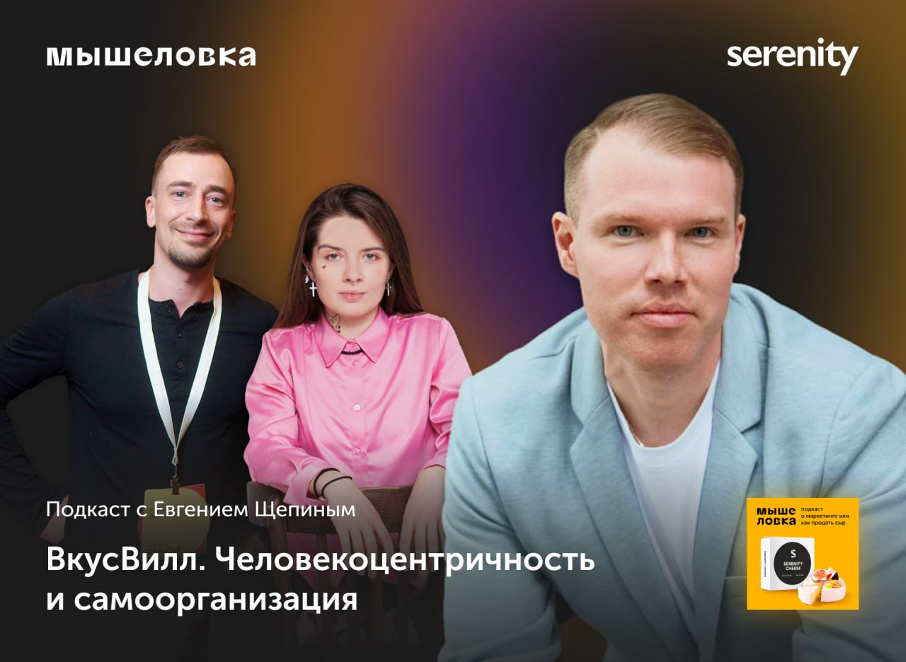

Если вам сложно такое представить, то мы рекомендуем послушать наш новый эпизод подкаста «Мышеловка» с Евгением Щепиным. Это человек, который несколько лет назад буквально ворвался на рынок здорового питания в России вместе с командой «ВкусВилл», выстроил эффективные внешние коммуникации и написал бестселлер про революцию в ритейле.
С Евгением мы детально обсудили, что помогло «ВкусВилл» стать лидером рынка онлайн-ритейла:
— Какой подход в культуре отличает «ВкусВилл» от множества современных компаний?
— Как человекоцентричность и клиентократия помогла им совершить революцию в ритейле?
— В чем секрет «долгосрочности» бренда?
Слушайте наш разговор на удобной площадке:
Apple Podcasts
Яндекс Музыка
Mave
Сергей Прусс
